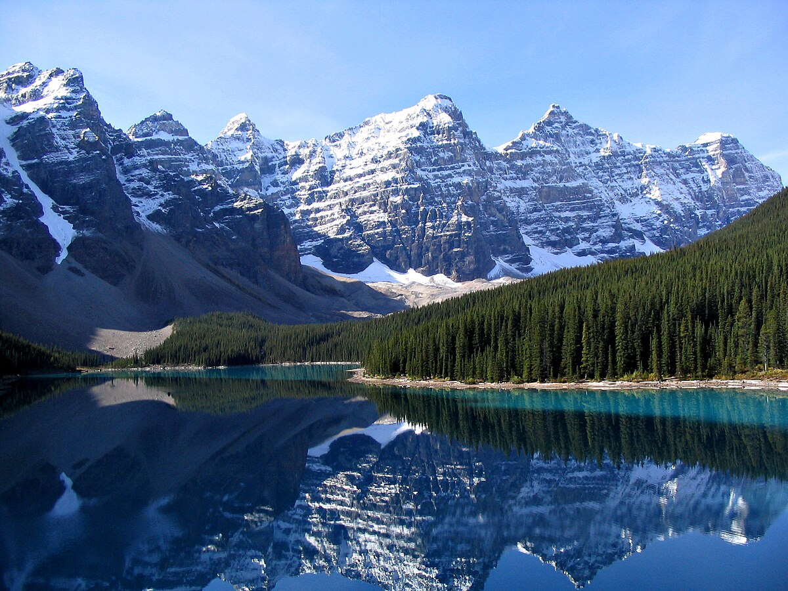

Visão Geral das Belezas Naturais do Canadá
O Canadá é conhecido por sua vasta e diversificada paisagem natural. Desde montanhas majestosas até florestas densas, lagos cristalinos e uma vida selvagem rica, o país é um verdadeiro paraíso para os amantes da natureza.
Neste site, vamos explorar algumas das mais incríveis maravilhas naturais do Canadá, que são de importância não apenas turística, mas também ambiental e ecológica.
